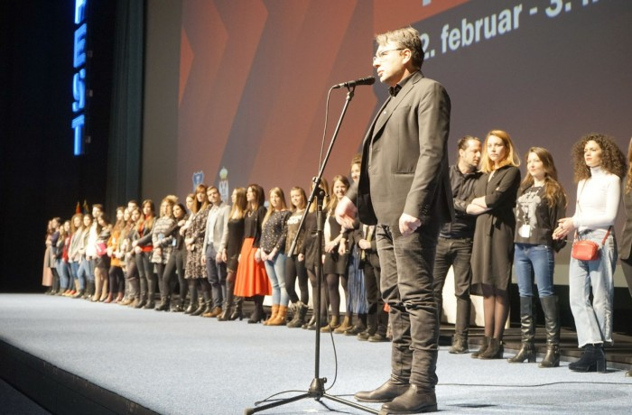

Održano je 418 projekcija, od toga 116 premijera, u 12 dvorana širom grada.
Poslednja projekcija festivala bio je film Lice poljske rediteljke Malgoržate Šumovske, a budući da su nagrade festivala dodeljene tokom prethodne dve festivalske večeri, umesto svečanog zatvaranja, umetnički direktor Jugoslav Pantelić obratio se publici pred projekciju filma Ja, Tonja u Sava centru.
On je istakao da je u prethodnih deset dana održano 418 projekcija, od toga 116 premijera, u 12 dvorana širom grada, kao i da je festival posetilo preko 70 gostiju. Pantelić je zatim odlučio da pozdravi sve one koji su zaslužni za to što FEST postoji.
"Obično iz večeri u veče pozdravljamo zvezde, goste, članove žirija, a sada vas molim da pozdravite grupu ljudi bez koje FEST-a ne bi bilo," rekao je Pantelić, a zatim pozvao ekipu FEST-a da mu se pridruži na bini. Publika je aplauzom pozdravila mnogobrojnu ekipu koja je radila na festivalu.
"Hvala kolege, hvala Beograde što smo već 46. put zajedno, i što ćemo nadam se i u godinama koje dolaze biti još bolji. Već sada zakazujemo sastanak za sledeću godinu, naredni, 47. FEST biće održan od 22. februara do 3. marta 2019," dodao je Pantelić. On se zatim podsetio i čuvenog Vlade Divljana koji nas je napustio pre tri godine, dodavši da bi njegova pesma "Samo jednu ljubav imam" mogla da bude posveta ove večeri za sve nas koji volimo film.